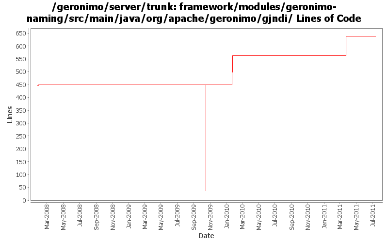

[root]/framework/modules/geronimo-naming/src/main/java/org/apache/geronimo/gjndi
 binding
(3 files, 414 lines)
binding
(3 files, 414 lines)

| Author | Changes | Lines of Code | Lines per Change |
|---|---|---|---|
| Totals | 32 (100.0%) | 683 (100.0%) | 21.3 |
| djencks | 25 (78.1%) | 579 (84.8%) | 23.1 |
| violalu | 2 (6.3%) | 98 (14.3%) | 49.0 |
| jdillon | 2 (6.3%) | 4 (0.6%) | 2.0 |
| xuhaihong | 1 (3.1%) | 2 (0.3%) | 2.0 |
| dwoods | 2 (6.3%) | 0 (0.0%) | 0.0 |
GERONIMO-5904 Reference bound in JNDI is not dereferenced properly when lookup (Patch from Fang Sheng Hao)
2 lines of code changed in 1 file:
GERONIMO-5874 Update KernelContextGBean.java
98 lines of code changed in 2 files:
minor cleanup
0 lines of code changed in 1 file:
GERONIMO-5041 Integration aries osgi jndi implementation
65 lines of code changed in 1 file:
GERONIMO-5025 Initial work on ee 6 scoped jndi stuff. Minimal testing so far
96 lines of code changed in 7 files:
GERONIMO-4916 step 2 move sandbox osgi framework into trunk
413 lines of code changed in 4 files:
GERONIMO-4916 step 1 remove old framwork
0 lines of code changed in 4 files:
update svn:ingore props as they were missing from some subdirs
0 lines of code changed in 2 files:
GERONIMO-4020 fix ResourceBinding and add some @Override annotations to try to make similar errors harder in the future
0 lines of code changed in 2 files:
Make loggers static again
1 lines of code changed in 1 file:
(GERONIMO-3985) Use SLF4J as the primary logging facade for Geronimo
3 lines of code changed in 1 file:
GERONIMO-3808 fix npe on shutdown. Not convinced this is compatible with resource bindings
1 lines of code changed in 1 file:
GERONIMO-3808 Fix shutdown NPE and provide better error when accessing java:comp env on a non-initialized thread. Port from 2.1
0 lines of code changed in 2 files:
GERONIMO-2971 fix most unbind exceptions.
4 lines of code changed in 1 file:
GERONIMO-2971 automatically bind jca resources (connection factories and admin objects) to jndi
0 lines of code changed in 2 files: